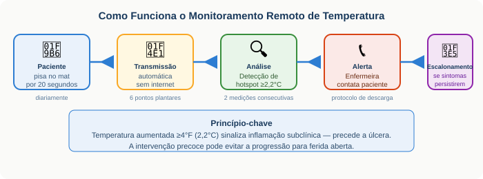
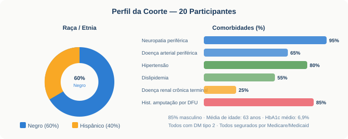
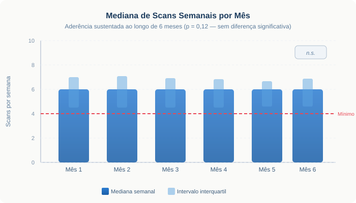
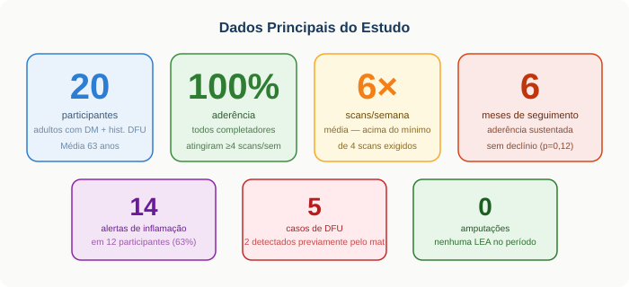

O problema que não pode esperar
A úlcera diabética (DFU) é uma das complicações mais devastadoras do diabetes. Ela surge quando a neuropatia periférica rouba a sensibilidade protetora dos pés, deixando-os vulneráveis a traumas silenciosos. Uma vez instalada, a DFU tem taxa de recorrência em 3 anos de 58% — comparável à recorrência de certos cânceres. A mortalidade em 5 anos pode atingir 70%.
No Bronx — onde este estudo foi conduzido —, amputações abaixo do joelho ocorreram com mediana de 55 anos de idade, com casos tão jovens quanto 36 anos. Prevenção eficaz, acessível e que funcione em populações vulneráveis é uma urgência clínica.
A tecnologia: um tapete que "enxerga" a inflamação
O princípio é elegante: elevações de temperatura ≥4°F (2,2°C) em relação à linha de base refletem inflamação subclínica e frequentemente precedem o desenvolvimento da úlcera. O SmartMat da Podimetrics captura essa informação de forma simples.

Diferente dos termômetros de infravermelho manuais — que exigem técnica e são difíceis de aplicar na sola do pé —, o tapete inteligente requer apenas 20 segundos em pé, uma vez por dia. Não exige conectividade com internet. Os dados são transmitidos automaticamente e de forma segura.
O estudo: quem foram os participantes
Este estudo piloto prospectivo longitudinal acompanhou 20 adultos com DM tipo 2 e histórico de DFU nos últimos 24 meses, recrutados de uma clínica de podiatria do Montefiore Medical Center no Bronx. Todos eram ambulatoriais, com neuropatia periférica confirmada.

Resultados: aderência surpreende pelo contexto

O que o mat encontrou

14 hotspots detectados
Em 12 participantes (63%). Alta frequência de inflamação subclínica plantar.
5 casos de DFU
2 detectados previamente pelo mat. 2 não tiveram inflamação prévia detectada. 1 surgiu fora do alcance do sensor.
6 hospitalizações
Apenas 1 por DFU (osteomielite). Nenhuma amputação de membro inferior.
Satisfação alta
Todos os respondentes avaliaram o mat como "muito fácil" ou "fácil" de usar. 100% satisfeitos com o serviço.
"Pacientes de alto risco, de populações historicamente sub-atendidas, podem se engajar de forma altamente consistente com tecnologia de monitoramento remoto de temperatura."
Contexto: o que estudos anteriores encontraram
Os resultados deste piloto se alinham — e complementam — a literatura existente:
O diferencial desta coorte é o contexto: população predominantemente negra e hispânica, de baixa renda, segurada por Medicare/Medicaid, proveniente de uma grande rede pública urbana. A aderência observada neste cenário estende a evidência para populações historicamente sub-representadas nos ensaios.
Limitações do estudo
- Ausência de grupo controle — não é possível inferir eficácia causal do mat na prevenção de DFU.
- Amostra pequena (n=20) — não dimensionada para detectar diferença em desfechos como amputação.
- HbA1c basal baixa (6,9%) e alto uso de calçado terapêutico podem não refletir a população DFU mais ampla.
- Aderência ao protocolo de descarga não foi sistematicamente avaliada.
- O mat não cobre regiões não-plantares e não captura biomecânica, neuropatia motora ou pressão plantar pós-amputação digital.
- Estudo conduzido por um único podólogo prescritor — pode não refletir cenários multi-profissional.
O que fica
O monitoramento remoto de temperatura plantar representa uma estratégia viável, bem tolerada e potencialmente de alto impacto para populações de alto risco com DFU. Os resultados deste piloto no Bronx — uma das regiões mais pobres dos EUA — indicam que a tecnologia transcende barreiras socioeconômicas quando adequadamente implementada.
Pacientes com DFU não estão "curados" — estão em remissão. Como no câncer, isso exige vigilância contínua. O mat inteligente pode ser um instrumento central nessa estratégia — mas precisa estar inserido em um cuidado coordenado, multidisciplinar e centrado no paciente.